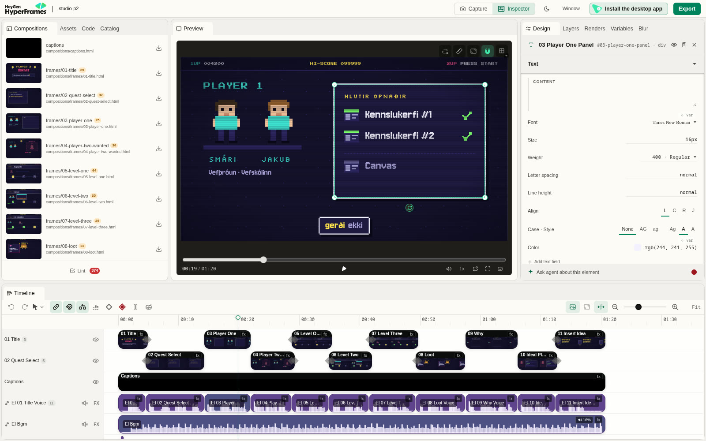

Five films, five styles
We made these with Claude in autumn 2026, each in a new style. Each one took an evening or two of conversation, and none of them needed any drawing or video editing by hand.
Under each film are the files the agent wrote for it: the storyboard page we reviewed, the brief, script and storyboard as Markdown, and the Python tools that made the voice and music. They are copies, so you can open and change them. Our whole style library is there too. The four HyperFrames films also open in Studio, so you can scrub through them second by second (see step 08).
Open this tutorial through a local server, not straight from disk: run npx serve . in the animations-with-claude folder and open the link it prints. Most things work from disk, but the clay storyboard loads its 3D engine as JavaScript modules, and browsers only allow that from a server.
npx hyperframes preview examples/claynpx hyperframes preview examples/player-2npx hyperframes preview examples/ordabokinHow it works
HyperFrames (open source, by HeyGen) is the tool that turns a web page into a video. It comes with skills: instruction files that teach a coding agent the rules, like how to time scenes, how to stay deterministic and how to check the result. With the skills installed, you describe the film and the agent does the HTML.
Because the film is a web page, anything a browser can draw can go in it. GSAP and CSS for the arcade and flashcard films, a hand-written canvas pixel engine for the neo-punk film, Three.js for the clay stop-motion film. Only the watercolour film used its own renderer.
One rule matters most: the same second must always look the same. No Math.random() or Date.now(), no animation that plays by itself. Everything sits on the paused timeline.
Your way of working: explore
A strong model is good at inventing, so let it. You describe the goal, the audience and where you want to check its work. It pitches ideas, chooses the tools, plans the scenes, runs the checks and looks at stills by itself. Your job is to react, choose and push back. When it's stuck, ask it why and what it would try.
Your way of working: step by step
A weaker model can still write a good scene. What it can't do is plan a whole film, choose the tools and invent a style all at once. So you make those decisions and give it one phase per message: the exact commands and file names, a style card with exact values, and our starter/ project to copy. It stops after every phase and shows you a check. When it's stuck, paste the exact error back, or start again in a new chat.
Why two ways? Compare them
| Strong model Claude Opus 5.5 | Weaker model smaller, older, free or local | |
|---|---|---|
| Who invents the style | The model pitches 4–5 ideas. You choose, mix or push back. | You do. Hand it a style card with exact colours, fonts and timings. |
| One message holds | The goal, the audience, the sources and the checkpoints. | One phase only. It stops and waits after each one. |
| Tools | It chooses them, and asks you when it needs to install something. | You name every command and file, and say "use nothing else". |
| Structure | It plans the scenes and can run helpers in parallel. | You give it the starter/ project to copy, one scene at a time. |
| Checking | It runs the checks and looks at stills by itself. | You tell it to run npm run check and paste the output. |
| When it's stuck | Ask it why, and what it would try. | Paste the exact error, or start the scene again in a new chat. |
Step by step
Showing the steps for Claude Opus 5.5a weaker model. Tick each step off as you go; the ticks stay in this browser.
Set up your laptop
You need these once. Check them in a terminal:
node -v # 22 or newer
ffmpeg -version # any recent version
python3 --version # for voices and music made in codeThen install the HyperFrames skills into your agent.
Claude Code
claude plugin marketplace add heygen-com/hyperframes
claude plugin install hyperframes@hyperframesCodex, Cursor, Gemini CLI, Copilot …
npx skills add heygen-com/hyperframes
# pick the "Core Skills" groupRestart the agent so it sees the new skills, and run npx hyperframes doctor to check that the machine can render.
Make one folder for all your films, and copy templates/STYLE-LIBRARY.md into it. Start the agent in that folder, so every film can see the library.
films/
├── STYLE-LIBRARY.md
└── my-launch-film/ ← the agent makes thisyou and the agent fill this in, phase by phaseKeep this tutorial's starter/ folder at hand: in Phase 3 the model copies it, so it starts from a project that already works.
Know what you want to say
This is the part only you can do. Before you open the agent, answer five questions. The model will ask you most of them anyway, so it is faster to have the answers ready. You'll paste the answers into Phase 1.
- Message: the one sentence the viewer should remember.
- Audience: who watches, and what they already know.
- Where: projector, Canvas, portfolio or phone? With sound, or muted? (Padlet and phone viewers often watch muted.)
- Length: 30–60 s for guide 4.4. Our films were 70–120 s and that already felt long.
- Sources: what the agent may read: your repo, your URL, your screenshots. And what it must not open.
The brief template has these as headings.
Also take 3–4 screenshots of your page (1920×1080 is easiest) and put them in films/my-launch-film/assets/shots/. Your film is built from them.
Real people as characters? It works: the clay film has five of us as puppets, teachers from three schools. Ask the people first. Then give the agent photos and let it number the faces it finds. You say who is who (1 = Smári, 2 = drop …
) and send more photos of anyone missing. The agent turns them into a cast list (hair, beard, glasses, shirt) and sculpts from that.
Ask for pitches, not a filmSet the rules and pick the style
Opus is good at inventing, so let it. Ask for several concepts that look very different, and tell it what you have already seen so it doesn't repeat it.
I want to make a short animated film, about [40] seconds, that launches my web page [NAME]: [one line on what it does and who it is for]. The code is in [path or repo] and it is live at [URL]. Read those first, and nothing else. The film will be shown [at our demo day on a projector]. It has to work [muted too]. I haven't chosen a style yet. Before you build anything, give me 4–5 pitches that look really different from each other. For each one: the concept, the look, the technology you would use, and what happens in the first five seconds. Tell me which one you would pick and why. I've already seen [the watercolour, arcade and neo-punk films from class], so surprise me. Then ask me everything you need to know, with your default answer in brackets, so I can answer in one message. Show me the storyboard on an HTML page before you start making the video.
What came back when we asked for the Player 2 film (shortened):
1. From napkin to app. A teacher's pen sketch turns into a working app. 2. Poster wall. Huge words slam in on the beat. 3. Blueprint. The project drawn as a technical drawing, the visual language of a trade school. 4. Player 2 wanted. A retro arcade game where the two teachers are Player 1, looking for a co-op partner. 5. The Padlet itself. The video is a Padlet board filling up with sticky notes.
I recommend 4. It's the furthest from watercolour … The levels match your action research cycles, so the video quietly explains the project structure.
Now react. Pick one, mix two, or ask for more:
Number [3], but with the ending from [5]. Make it a bit more [playful].
None of these is quite it. Give me three more, further from each other, and one that is a bit weird.
How hard would it be to make it look like [stop-motion clay]? What would it cost in render time on my laptop?Can you make [me and my two teammates] into characters in the film? Here are some photos: [photos]. Number the faces you find, and tell me when you want me to say who is who.
Open a new chat in your films folder. The first message is always the rules: which tools it may use, how a HyperFrames file must look, and that it stops after every phase. Send it again at the start of every new chat.
You are helping me make a [40]-second launch film for my web page. We will use HyperFrames: the film is an HTML page animated with GSAP, and HyperFrames renders it frame by frame to an MP4.
Tools you may use. Do not use any other tools or libraries:
- npx hyperframes (init, check, snapshot, preview, render, docs)
- GSAP 3 (already loaded in index.html from cdn.jsdelivr.net)
- ffmpeg and ffprobe
- python3 with edge-tts (only in Phase 5)
Rules for every HTML file you write:
1. The film is index.html. Each scene is its own file, compositions/sN.html, mounted in index.html with data-composition-src.
2. Every timed element has data-start and data-duration (seconds) and class="clip".
3. Each file has ONE GSAP timeline created with gsap.timeline({ paused: true }) and registered as window.__timelines["<composition-id>"]. Never call play().
4. Times inside a scene file start at 0 for that scene.
5. No Math.random(), no Date.now(), no fetch, no setTimeout or setInterval. The same frame must always look the same.
6. CSS ids and classes must not start with a digit. Prefix every id with the scene id (s1-title, s2-shot).
7. Fonts and images are local files in assets/. No web fonts from Google at render time.
Work in phases. I will send one phase at a time. At the end of each phase: run the check I ask for, show me the output, and STOP. Do not start the next phase until I send it.
First, run these and read the output:
npx hyperframes docs compositions
npx hyperframes docs data-attributes
npx hyperframes docs gsap
Then explain the rules above back to me in your own words, in 7 short lines. Then stop.If it explains the rules back correctly, it's ready. Now you choose the look. A weaker model can't invent a good style, but it can follow exact numbers. Use this style card, or write your own with the same headings. You'll paste it into Phase 1.
STYLE CARD: "Bold poster" Canvas: 1920x1080, 30 fps. Colours (use only these): paper #F4EFE6 · ink #111111 · accent #FF4F1F · blue #2F5BFF A scene uses at most 3 of them. Text is ink on paper, or paper on ink. Fonts: Headlines: Inter 900, 140–180 px, letter-spacing -0.04em, max 6 words per screen. Small labels: Space Grotesk 500, 32 px, UPPERCASE, letter-spacing 0.08em. Layout: Left-aligned. Text starts at x = 160 px. Keep 100 px clear on every edge. Screenshots sit in a simple browser frame: 12 px ink border, 40 px top bar, 8 px hard ink shadow offset (no blur). Motion: Things enter in 0.5 s with ease "power3.out" (y: 60 → 0, or scale 0.9 → 1). Several items: stagger 0.08 s. After the last item arrives, HOLD at least 1.5 s with nothing new happening. Only one thing moves at a time. Nothing moves at constant speed except progress bars. The title is already on screen at 0 s (the first frame is the thumbnail). Between scenes: A hard cut, or an accent-colour panel that wipes across the screen in 0.4 s (ease "power2.inOut"). End card: The page name, the URL, and nothing else. Hold it for 3 s. Avoid: Gradients, glows, blur, emoji, stock icons, rotating 3D, more than 6 words on screen.
Want another look? Copy one from our style library, but write it out with exact values like the card above.
Choose a voice, or none
Listen to demos before the storyboard: the same opening lines read by two or three voices. The agent can't hear. It can only check that each file has sound, so you have to listen yourself.
| Option | Good | Watch out |
|---|---|---|
Edge neural voices (edge-tts) | Natural, many languages, including Icelandic (Gunnar, Guðrún). We used Gunnar twice, and Emma (en-US-EmmaMultilingualNeural) for the clay film. | Online: your script is sent to Microsoft. |
Kokoro (npx hyperframes tts) | Runs on your laptop and is free. English and a few other languages (e.g. bf_emma). | No Icelandic. Slow on a weak CPU. |
| Piper | Offline, free, has Icelandic voices. | Sounds more robotic. |
| Your own voice | The most convincing. | Record the script, then the agent times the film to your recording. |
| No voice | Music and a few keywords. Works muted. | Every scene must read without sound. |
Can you make me short demos of two or three [English] voices reading the opening lines before you start the storyboard? Put them in one folder so I can compare them. If I need to install something, just say so.Make the demos yourself. It's three commands, and the voices go into the film in Phase 5:
python3 -m venv .venv && .venv/bin/pip install edge-tts
.venv/bin/edge-tts --list-voices | grep en- # or is-, pl-, es- …
.venv/bin/edge-tts --voice en-GB-RyanNeural --text "Meet Recipe Finder." --write-media demo-ryan.mp3Learned the hard way: write numbers as words in the voice script. One take silently dropped "prósent" after "80%". Spell names the way they sound in the voice script ("Vef-skoh-linn", "Tee-boo", "twenty twenty-three"), and keep the real spelling for the subtitles.
Agree on the plan
Before any animation, the agent writes the plan into files in the project folder:
BRIEF.md: message, audience, length, voice, styleSCRIPT.md: every line the voice says and every word on screenSTORYBOARD.md: the scenes, their seconds, what moves
A good agent ends with a short list of questions and its defaults. Answer them by number in one message. Then hand over the details and keep the decisions for later:
Yes, this plan is good. Do it your way, and I'll correct anything on the storyboard.
Phase 1 turns your answers from step 01 and the style card into two files: BRIEF.md and SCRIPT.md, a table of exactly five scenes. No code yet.
Phase 1. Write two files in the folder [films/my-launch-film]. Do not write any HTML yet. BRIEF.md, with exactly these headings: - Message: one sentence the viewer should remember: "[Recipe Finder tells you what to cook from what is already in your fridge.]" - Audience: [classmates and teachers at demo day] - Where it is shown: [projector, with sound] - Length: [40] seconds, 1920x1080, 30 fps - Voice: [none / English, en-GB-RyanNeural] - Style: the style card below, copied in full SCRIPT.md: a table with exactly 5 scenes and these columns: | id | seconds | what we see | words on screen (max 6) | voice line (max 15 words, or "none") | Scene s1 is the title. Scene s5 is the end card with the URL [URL]. Scenes s2–s4 show: the problem, the main feature, and one detail people will like. Use the screenshots in assets/shots/: [list the file names]. The seconds must add up to [40]. [PASTE THE STYLE CARD HERE] Show me SCRIPT.md and stop.
Check the table yourself: do the seconds add up, is every screen six words or fewer, and does each scene say one thing? Ask for changes until it's right.
Read the plan carefully. It's the cheapest place to catch a wrong fact, like a date, a name or something you promised that you shouldn't have.
See it as a storyboard page
This is the step we would never skip again: a web page with a picture of every scene, in the real fonts and colours, with the words and the timing beside each one. It's much easier to judge a film from that than from a table.
Make me a web page that shows the storyboard with pictures of every scene, so it is easier for me to picture it.
Phase 2. Make storyboard.html in the same folder: a static web page (no GSAP, no JavaScript needed) that I can open in a browser. For each scene in SCRIPT.md: one card with - a 16:9 box, 640x360, that shows the scene's key moment in the style card's colours, fonts and layout (HTML and CSS only, use the real screenshots) - the scene id and the start–end time - the words on screen and the voice line - one line: "what moves" (e.g. "headline slides up, screenshot scales in, accent bar wipes left to right") Put the cards in a grid, 2 per row. Use the fonts from assets/fonts. Tell me the command to open it (python3 -m http.server 8000) and stop. I will send you changes.
Now edit the storyboard, not the film. Changes here take a minute, and changes after the render take much longer. Be concrete:
In scene [s4], instead of "[old line]", say "[new line]".
Can you make the style a bit more [neo-punk], but keep the content as it is and the expressions on the faces?If you know exactly what look you want, paste a full art direction. For the neo-punk film we pasted a whole page of it, and the model followed it literally:
Make another one in a totally different style. Here is the art direction:
"""
[Palette: 2–5 colours …
Shapes and lines: …
How it moves: on twos, snaps, holds, smears …
Transitions: …
What to avoid: …]
"""With a weaker model, change one or two things per message, and say which card.
Check the letters
Fonts are where our films broke most often. Many display and pixel fonts are missing letters like þ ð æ ö á, or draw them badly. Before building, ask the agent to render test words in the chosen font, at the exact size they will appear, and look at the image yourself.
Keep fonts as local files in the project (assets/fonts/), so the render never depends on the network. The Bold poster card uses Inter and Space Grotesk, which have all the Icelandic letters.
Build: “now do it!”
When the storyboard is right, say so:
Perfect, now do it!
Then it's the agent's turn. A strong model will typically:
- create the project with
npx hyperframes init - write one HTML file per scene, often with several helpers in parallel
- generate the voice clips and time each scene to them
- write the music and sound effects in code (a small Python synthesizer), so there are no licences to worry about
- add subtitles, if the film must work muted
- run
npm run checkand fix what it finds - open the draft in HyperFrames Studio:
npx hyperframes preview
Now the build, one scene per message. Phase 3 sets up the project from our starter and builds the first scene. Then repeat Phase 4 for each of the other scenes, and add the voice last.
Phase 3. Set up the project and build ONLY scene s1.
1. Copy the starter project into [films/my-launch-film] (index.html, compositions/, package.json, hyperframes.json, meta.json). Keep BRIEF.md, SCRIPT.md and storyboard.html.
2. Put the fonts in assets/fonts:
npm install @fontsource/inter @fontsource/space-grotesk
then copy the latin .woff2 files you need from node_modules/@fontsource/*/files/ into assets/fonts and load them with @font-face.
3. Change compositions/s1.html so it matches the s1 card in storyboard.html and the motion rules in the style card. Keep the same structure as the starter file: <template>, <style>, a root div with data-composition-id="s1", one paused timeline registered as window.__timelines["s1"].
4. In index.html, set each scene's data-start and data-duration from SCRIPT.md, and set the root data-duration and the tl.to({}, { duration: N }) line to the total length.
5. Run: npm run check
Fix every error. Then run: npx hyperframes snapshot --at 0.5,2,3.5 -o snaps
6. Start Studio so I can look at it myself: npx hyperframes preview --background
7. Show me the check output, the paths of the snapshot images and the Studio link, and stop.Phase 4. Build ONLY scene [s2], in compositions/[s2].html, following the [s2] card in storyboard.html and the style card. Copy the structure of compositions/s1.html exactly; only change the ids (prefix [s2]-), the content and the animation. Add it to index.html if it isn't there yet. Then run: npm run check and: npx hyperframes snapshot --range [START],[END] --frames 3 -o snaps Show me the output and stop.
Phase 5. Add the voice.
1. Make a Python virtual environment and install edge-tts:
python3 -m venv .venv && .venv/bin/pip install edge-tts
2. For each scene with a voice line in SCRIPT.md, run:
.venv/bin/edge-tts --voice [en-GB-RyanNeural] --rate=[-5%] --text "<the line>" --write-media assets/voice/<scene>.mp3
Write numbers as words in the text ("forty", not "40").
3. Measure each file: ffprobe -v error -show_entries format=duration -of csv=p=0 assets/voice/<scene>.mp3
4. If a voice clip is longer than its scene minus 1 second, make the scene longer and update SCRIPT.md, every data-start after it in index.html, and the total length.
5. Add one <audio> per clip inside the root div of index.html:
<audio id="voice-<scene>" src="assets/voice/<scene>.mp3" data-start="<scene start + 0.4>" data-duration="<clip length>" data-track-index="10" data-volume="1"></audio>
6. Run npm run check, show me the output and a table of scene, clip length and scene length, and stop.
I will listen to the voice myself.Music: put a track you're allowed to use at assets/music.mp3 and ask for one more <audio> line on track 11 with data-volume="0.15". A strong model can write music in code. A weak one usually can't.
Look inside a scene file
A scene is just HTML. This is the first scene of starter/, a two-scene project that passes the check:
<template>
<style> #s1-title { position: absolute; left: 160px; top: 380px; font-size: 160px; } </style>
<div id="s1-root" data-composition-id="s1" data-start="0" data-duration="4"
data-width="1920" data-height="1080">
<h1 id="s1-title" class="clip" data-start="0" data-duration="4">Meet Recipe Finder</h1>
</div>
<script>
(function () {
window.__timelines = window.__timelines || {};
const tl = gsap.timeline({ paused: true }); // paused: the renderer moves it
tl.fromTo("#s1-title", { y: 40 }, { y: 0, duration: 0.8, ease: "power3.out" }, 0);
window.__timelines["s1"] = tl; // register it under the scene id
})();
</script>
</template>Review it like a director
Watch the draft three times:
- Once at full speed, without pausing. The viewer sees it once. Did you understand each moment before the next one started? Code tends to move everything at the same brisk speed.
- Once muted. Does it still make sense?
- Once frame by frame. Read every word and check every letter, name and date.
Point at the exact frame in Studio
HyperFrames Studio is a page in your browser with the film, its scenes and a timeline. You don't edit in it much. You use it to find the exact moment and the exact element, so your feedback can say at 0:19, the panel on the right
instead of somewhere in the middle
. The agent usually starts it for you.Phase 3 started it. To start or stop it yourself, in the project folder:
npx hyperframes preview --background # start Studio, prints the link (localhost:3002)
npx hyperframes preview --stop # stop it when you're done
1 2 3 4 5 6 7 8 9- Compositions: every scene is its own file, with a thumbnail. Click one to watch that scene on its own.
- Preview: the film at the playhead. Space plays and pauses, ← → step one frame, Shift+arrow steps ten.
- The time: where you are and how long the film is (
00:19 / 01:20). Put this number in your feedback. - Click an element in the preview to select it. Here it's the panel with the green ticks.
- Inspector: the selected element's name and id (
03 Player One Panel,#03-player-one-panel) and its properties. The id is what the agent searches for in the code, so it's the most precise thing you can give it. - Ask agent about this element: sends the selection to an agent. In the terminal, your agent can also read what you selected itself, with
npx hyperframes preview --selection. - Timeline: click the ruler to jump to a time. The playhead is the vertical line.
- Tracks: scenes, captions, every voice clip and the music, each on its own row. Here you can see whether a voice clip runs past its scene, or where the music is too loud.
- Lint: the warnings from
npm run check. Ours had 374 harmless ones (class names starting with a digit).
Want to try it first? Open one of our films in Studio with the command under it.
Careful: Studio edits the same files as your agent. If you drag a clip or change a property, the film changes straight away (Ctrl+Z undoes it). That's fine for a small nudge, but tell the agent what you changed, or it may work from an old picture of the file. Bigger changes like the story, several scenes or the style belong with the agent.
Send your changes
Play the film once without stopping. Then go back, pause where something is wrong, click the element, and write down the time and the id. Send everything in one message, and ask to see it again before the render:
Fix the overlapping nodes in scene [7] and the zoom in scene [9]. Make the sound effects quieter and the voice louder. Show me again before rendering.
At [0:19], #03-player-one-panel comes in too early: let it come in after the two characters. At [0:42] the text is too close to the edge. And look at what I've selected in Studio right now: make it [smaller and slower]. Show me again before rendering.
We asked twice for quieter sound effects. What worked in the end: voice +7 dB, music at 0.10–0.16, effects at 0.08–0.12.
A weaker model can't go looking for things, so give it everything: the scene file, the id, the time inside that scene and the new value. Studio shows you all of these: the scene in the Compositions list, the id in the Inspector. Its clock counts the whole film, but each scene file counts from 0, so subtract the scene's start. One change per message.
Change only compositions/[s3].html. #s3-shot starts its animation at 0.8 s, which is too early. Start it at 1.6 s instead, and change nothing else. Then run npm run check and npx hyperframes snapshot --range [START],[END] --frames 3 -o snaps, show me the output and stop.
Render
Render it.
The agent runs npm run render and you get an MP4 in renders/.
Phase 6.
1. Run npm run check. It must pass with 0 errors.
2. Render: npx hyperframes render -o renders/film.mp4
Tell me how long the render took.
3. Make a small copy for slides:
ffmpeg -i renders/film.mp4 -vf scale=-2:720 -c:v libx264 -crf 26 -preset slow -c:a aac -b:a 128k renders/film-720p.mp4
4. Add a row to ../STYLE-LIBRARY.md (create it from the template if it doesn't exist): the style name, the technology, this film, how to make another one, what broke and how we fixed it, and the render time.
Then stop.- HTML and GSAP styles are light. 80 s took 1.5 minutes on a laptop.
- Painterly, WebGL and 3D styles are heavier. The clay film (Three.js) took 5 min 20 s for 97 s. The watercolour film took seconds per frame and the laptop got hot. Ask about render cost when you choose a pitch.
- For a quick test, use
npx hyperframes render --quality draft.
For slides or the LMS, make a smaller 720p copy:
ffmpeg -i renders/film.mp4 -vf scale=-2:720 -c:v libx264 -crf 26 -preset slow -c:a aac -b:a 128k film-720p.mp4Write down what you learned
Every lesson on this page came from our style library: things no model knew until we failed and wrote them down. That's what a skill really is, and it's why each film went faster than the last.
Save this style as a template, and add a row to my STYLE-LIBRARY.md: the technology, this film, how to make another one, what broke and how we fixed it, and how long the render took.
What did you not know about this when we started, that you had to find out by failing?
Next time, start with Read STYLE-LIBRARY.md and make another [style] film about …
.
Phase 6 already added a row. Read it, and add what you learned about prompting a weaker model: which phase it got wrong, and what you said to fix it. Next time, paste that row into Phase 1 instead of the style card.
All the prompts
Every prompt from the steps, in order, for Claude Opus 5.5a weaker model. Replace everything in [brackets]. They're also a file you can keep open beside the agent: prompts/opus-explore.mdprompts/weaker-model-step-by-step.md.
Our real prompts
These are the messages we actually sent, typos and all. Look at how short most of them are, and at how many of them say “show me first”.
Player 2 óskast pixel arcade
I want to make a video … maybe I would like to try a different style now. The water colors were really cool but I want to try something different to see all what you can do with this method
Let's try an icelandic voice, can you create a demo voice in icelandic before you start making the sotyboard. … If you need me to install something or downloas some software for it, just say so
yes this plan is perfect, just do it your way and I will correct anything on the storyboard if I want something different.
make me a website that shows the storyboard with the pictures so it is easier for me to picture this
maybe instead of saying "engin umsókn, engin frestur og þú þarft ekki að kunna að forrita" it would be beter to just say "best er ef þú kannt alls ekki að forrita en hefur góða hugmynd …"
perfect, now do it!
fix the 07 nodes and fix the zoom and make the sound effects lower and the voice higher, then show me again before rendering
render it
·yes, save it as a template
last time, with the water colors, it took a lot longer to render … why did it take so much shorter?
Vefþróun með gervigreind neo-punk pixel
… This video should be with a nice music in the background but should also work well without any sound. Avoid too much text and try to keep it as visual as possible. Use high resolution pixel art style with exaggerated facial expressions. Make a story board in html that shows it in an interactive and easy to understand way so that I can ask you to make any changes before you start rendering … Use only a few colors and good contrast
can you make the style a bit more neo-punk but keep the content how it is and the awesome expressions on the character faces. … Skip the voice and add music that fits to the style.
looks good but can you create an another one in a totally different style with more emphasize on AI … Here is a style guide for the video:
(followed by a full page of art direction)great. some of the letters are unreadable but maybe when you start rendering it in higher contrast it will get better?
(It didn't. The fix was the font size, see step 06.)Great! Well done! Now do it!
From one island to another clay stop-motion
I want to create an animation. It is to introduce our school for teachers from I.E.S. El Rincón. … I would like the animation to be a stop-motion looking film with (or how hard would that be?) Maybe you could make me, Jakub and maybe also […] into figures in that video? … Start drafting this, ask me any questions you need answers to, and tell me when you want me to add names to the figures, then show me the story board on an HTML page before you actually start to make the video
- (The agent showed a numbered lineup of faces from our photos. We answered:)
1 = […] 2 = Smári … 7 = drop … But Jakub is missing from this all, even though he plays a big part in the video. Here is another picture of […] for fine tuning him …
Everything is great! can you make the voice be Emma and I like the idea of putting the Erasmus+ in the end
When it goes wrong
| You see | Likely cause | Ask for |
|---|---|---|
| Letters missing or wrong (þ, ð, æ, R looks like A) | The font lacks the glyph, or a pixel font is rendered at the wrong size | A test image of your hardest words at the real size, or a different font |
| Everything happens at once, too fast to follow | Code moves every part on the same curve at the same time | “One thing at a time. Hold every moment until I can read it, at least 1.5 s.” |
| The first frame is empty | Everything animates in from nothing; the first frame is the thumbnail | “Have the title on screen at 0 s.” |
| The voice mispronounces a name | The text-to-speech guesses | A separate spoken line spelled the way it sounds, and keep the real spelling on screen |
| The preview still plays the old voice | The preview cached a file with the same name | New file names for every take (we added a short hash) |
| A scene doesn't show up at all | An id or class starting with a digit (#02-intro), or a missing data-start | “Run npm run check and fix every error.” |
| Render is slow and the laptop gets hot | Painterly, WebGL or 3D style (watercolour, clay) | --quality draft while testing, --workers 2, or a lighter style |
| Sound effects drown the voice | Default volumes | Voice louder (we used +7 dB with a limiter), music ~0.15, effects ~0.1 |
| The model does several phases at once, or changes files you didn't ask about | The rules from Phase 0 fell out of its memory | A new chat: Phase 0 again, then the phase you're on |
What you hand in for 4.4
- The film: a 30–60 s launch film for your 4.3 page, as a 720p MP4
- The storyboard page, and one change you made because of it
- Your STYLE-LIBRARY.md, with at least one row and a "what broke" note
- Your prompts: the conversation, or the phase prompts you used. Say which model you used, and whether you'd prompt it the same way next time.